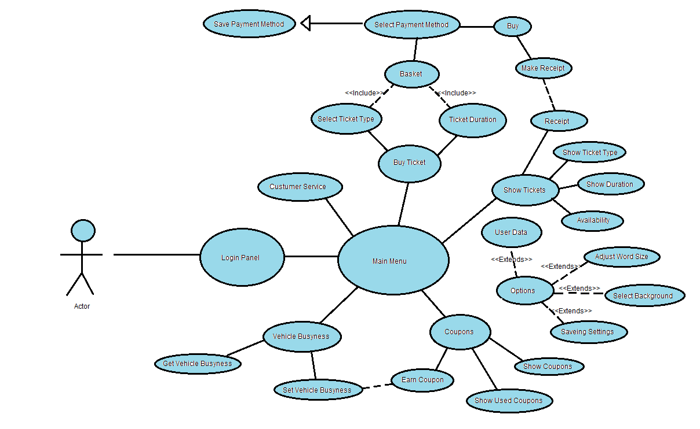

Szoftver
Követelmény Analízis Dokumentum
Gyakorlatvezetõ:
Dr. Krizsán
Zoltán
Csoport tagok:
|
Név |
Tankör |
Email-cím |
|
Baráth Kristóf |
G2BI2 |
barathkristof22@gmail.com |
|
Siska Dávid |
G2BGI |
siska.david0011@gmail.com |
|
Bodnár László |
G2BI2 |
laszlo.bodnarxd@gmail.com |
|
Klecskó Bence |
G2BP1 |
klecskbence@gmail.com |
|
Szûcs Milán |
G2BGI |
szucsmilan02@gmail.com |
Történet
|
Dátum |
Verzió |
Leírás |
Szerzõ |
|
2022.10.22 |
1.0 |
Bekezdések
felosztása, megfogalmazás |
Baráth
Kristóf, Siska Dávid, Bodnár László, Klecskó Bence,
Szûcs Milán |
|
2022.10.27 |
1.5 |
Javítások |
Baráth
Kristóf, Siska Dávid |
Tartalomjegyzék
9. On-line dokumentáció és Help
rendszer
10. Felhasznált kész komponensek
12.1.
Kötelezõen alkalmazandó szabványok
12.2.
Választás alapján alkalmazott szabványok
1.Bevezetés
Betatech System
Az álltalunk fejlesztett alkalmazás egy olyan
felületet kínál felhasználói számára, ahol lehetõségük van bérletet, illetve
menetjegyet vásárolni helyközi járatokra. Ennek megvalósítására a felhasználóknak
regisztrálniuk kell az alkalmazásban egy email címet és jelszót megadva, mely
adatok a felhasználók érdekében a felhõben titkosítva tárolódnak. Fizetési
módként online fizetési opciót lehet kiválasztani, mely során a
kártyatulajdonos adatai szintén titkosítottak. A menetjegy érvényesítésére az
applikáció a használt eszköz kameráját használja, azzal a jármû oldalán
elhelyezett QR kódot beolvassa. Különbözõ szolgáltatások járnak még alkalmazás
használatához. Az egyik a jármû valós idejû telítettségének nyomon követése.
Ennek segítségével a felhasználók láthatják, hogy az egyes járatokat hány ember
veszi éppen igénybe. Az alkalmazás továbbá rendelkezik hibabejelentõ
funkcióval, így az esetleges dugókról, illetve forgalmi akadályokról szinte azonnal
értesülnek a felhasználók.
2.Áttekintés
Mivel a szerverünk és az adatbázisunk is az AWS(Amazon Web Services)-en fog
futni nagyban függünk ettõl, ez a szolgáltatás automatikusan növeli és
csökkenti az adatbázis méretét és a szerver(ek)
teljesítményét attól függõen hogy mennyien használják a szoftverünk ezért az
adatbázisunk mérete és a szerverünk teljesítményének csak az Amazon kapacitása
szab határt. Továbbá függünk még az egyes felhasználók adott bankjainak
kapcsolatától és megbízhatóságától, ugyanis nagyban befolyásolják a fizetés
menetének gördülékenységét és gyorsaságát.
Alkalmazásunk által preferált platformok:
·
Android, iOS, böngészõ
·
Legalább
Android 5.0, iOS 8.1, Google Chrome 38.0 vagy más böngészõ azonos verziója.
3. A
rendszer funkciói
A rendszer fõ funkcióit egy use-case
diagram segítségével foglaljuk össze. A use-case diagram segít könnyedén
megérteni az alkalmazás funkciót és ezeket egyértelmûen ábrázolja, hogy laikus
szemmel nézve is rengeteg információ leszûrhetõ legyen belõle.

4.
Használhatóság
A program úgy van tervezve, hogy az a
hétköznapi emberek számára gyorsan és egyszerûen használható legyen.
A kezdõ felhasználókat egy segítség
menüpont segíti beszkennelni az elsõ QR kódokat, azonban, ha késõbb is
segítségre van szükségük akkor ez ugyanúgy rendelkezésre áll.
Felhasználói felülete nagy vonalakban
hasonlítani fog a már ismert nagyobb, jegyvásárlásra használt alkalmazások
felületére, így könnyen megtanulható lesz használata.
Minden
felhasználónak GYIK, chatbot rendelkezésre áll általános problémákkal
kapcsolatban.
5.
Megbízhatóság
Szolgáltatásaink számára
az adatbázist és a szervert az Amazon Web Services fogja
biztosítani, így szoftverünk megbízhatósága nagyban tõlük függ. Az Amazon Web Services az alábbi adatokat közölte a havi
elérhetõségükrõl: Kevesebb, mint 99.99%, de nagyobb, mint 99.00%. Így
körülbelül havi 6 olyan órával számolunk, amikor az Amazon Web Services esetleg nem érhetõ el, ezáltal a mi
szolgáltatásaink sem.
6.
Teljesítmény
A szerveroldali
sávszélesség minimum 1Gbps kell legyen. Szerverleállás esetén a felhasználók
ugyan úgy fognak tudni menetjegyeket érvényesíteni, csak az elvárt válaszidõ
fog megnövekedni jelentõsen és azzal is számolni kell, hogy ez idõ alatt az élõ
információt nyújtó szolgáltatások esetlegesen nem fognak megfelelõen mûködni.
7. Támogatottság
A, A C# használata miatt
a konvenciók a Microsoft által közzétett irányelveket követik. A
Microsoft iránymutatásaiban kizárólag a PascalCase és
a camelCase használatát javasolja, az utóbbi csak a
metódus paraméterek és a metódusok helyi változónevek használatára szolgál. A
mezõk elnevezésére vonatkozó Microsoft iránymutatások a static,
public és protected mezõkre
vonatkoznak; a nem static és más hozzáférhetõségi
szintû mezõket az iránymutatások kimondottan nem fedik le. Bármely
azonosító nevet megelõzhet a kereskedelmi at (@)
szimbólum, jelentésének változása nélkül.
B, A programba beépítésre
kerül 1 naplózó rész is, amely a nap végén a begyûjtött adatokat (mekkora utat
tett meg az adott személy, merre járt stb.) elküldi számunkra és menti az
adatbázisban. Ezt 1 másik program fogja kiértékelni amely, ezek után új
ajánlatokat (gyorsabb/olcsóbb útvonalak) javasol az adott felhasználók a róla
készült profil alapján.
8. Tervezési korlátozások
·
A
program részei a következõk lesznek: 1 helymeghatározó rész, mely mutatja a mi
helyzetünket, az általunk keresett buszt és a közelben lévõ közúti eseményeket.
Emellett lesz 1 naplózó rész mely gyûjti az adatokat a felhasználóról, továbbá
1 hibabejelentõ és értékesítõ részt is. Ezeken felül van még az alap GY.I.K rész.
·
A
használt programnyelvnek: C#, html és SQL
·
Fejlesztõeszközök:
Visual Studio
9. On-line dokumentáció és Help rendszer
Az applikációnk súgóval van felszerelve, ami három
nyelven érhetõ el (magyar, német, angol). Online hibabejelentõ felülettel is
rendelkezünk, az esetleges hibák kiszûrésére. Az applikáció használatáról tud a
vásárló tájékozódni, részletes leírást kapva a regisztrációról,
egyenlegfeltöltésrõl, illetve a jegy/bérlet vásárlásról. Elfelejtett jelszó
esetén a rendszer küld egy linket a felhasználónak, ezáltal új jelszót tud
magának beállítani. Lehetõségük van a járat valós idejû pozíciójának
megtekintésére, illetve a járat telítettségére áttekintésére is.
A rendszer tartalmaz GYIK részt is (Gyakran Ismételt
Kérdések), ami azokat a problémákat írja le, amirõl úgy gondoljuk, hogy nem
mindenkinek teljesen egyértelmûek.
Az applikáció
regisztráció után részletes leírást tartalmaz a felhasználónak az applikáció
használatáról. Így az applikációt úgy gondoljuk, hogy teljesen
felhasználóbarát.
10. Felhasznált kész komponensek
A rendszer két szolgáltatás komponenseit veszi
igénybe:
Alkalmazásszerver
Az alkalmazásszerver egy szoftverkeretrendszer, amely olyan
környezetet biztosít, amelyben tetszõleges alkalmazások futhatnak, függetlenül
attól, hogy mit is csinálnak. Fõ feladata eljárások hatékony
végrehajtása (programok, rutinok, szkriptek) és
nagyobb alkalmazások készítésének támogatása.
Adatbázis szerver
A rendszer a felhasználó
adatait (felhasználónév, jelszó) titkosítva õrzi az adatbázisban. Emellett a felhasználó
egyenlegét is tárolja, valamint a jegyek számát, és a bérlet érvényességének az
idejét. Az adatbázis szerver nélkül maga az applikáció se mûködõképes, ezért
mindenképpen szükség van rá.
Az
adatbázisban szereplõ adatokat bizalmasan kezeli a rendszer, tehát a rendszer
nem él vissza senkinek az adataival.
11. Interfészek
11.1. Felhasználói interfészek
Az alkalmazás GUI-t
használ (Grafikus felhasználói felületet). Teljesen felhasználóbarát, egyszerû
a kezelése, nem jelent különösebb nehézséget az alkalmazás használata a
felhasználó számára.
Az alkalmazásban az
alábbi opció szerint választhatunk:
·
Regisztráció/Bejelentkezés
·
Egyenleg
áttekintése/Egyenlegfeltöltés
·
Jegy/Bérlet
vásárlása, használata
·
GYIK (Gyakran
Ismételt Kérdések), súgó használata.
·
A járat
telítettség megtekintése
·
A busz valós idejû
pozíciójának megtekintése

Az alkalmazás megnyitása után az alábbi bejelentkezõ felület fogad minket, ahol elõször regisztrálnunk kell. Sikeres regisztráció után beléphetünk a felületre és megvásárolhatjuk a számunka megfelelõ szolgáltatást.

A fentebb lévõ képen a regisztrációs felület látható.
Itt minden adat kitöltése kötelezõ a sikeres regisztrációhoz. Amennyiben
sikeresen kitöltöttük az adatlapot egy értesítést kapunk arról, hogy sikeres
vagy sikertelen volt-e a regisztrációnk.

A
jegyvásárlást követõen a kiválasztott közlekedési eszközre felszállva már nincs
más dolgunk, mint ellenõrzés esetén a generált QR-kódot bemutatni a vezetõ,
valamint az ellenõrzõ jegyellenõrnek.

Bérletvásárláskor
a számunkra megfelelõ opciók kitöltésével vásárolhatjuk meg a bérletünket.
Járat
telítettségének nyomon követesé
Az alkalmazáson belül lehetõség lesz
a járatok aktuális használtságát nyomon követni. Ezt a jármû oldalán
elhelyezett QR kód segítségével tudjuk kivitelezni.

Amikor egy felhasználó felszállásnál
érvényesíti menetjegyét a QR kód beolvasásával, automatikusan hozzá adódik, az
adott jármû adatbázisához, és mind addig benne marad, ameddig el nem hagyja a
jármûvet. Amikor a felhasználó beolvassa a QR kódot, az alkalmazás felismeri,
hogy melyik útvonal járatára szállt fel az illetõ, és megjeleníti számára a
soron következõ megállókat, melyek közül ki kell választania azt, amelyiken
szándékozik leszállni.

Ezzel a funkcióval élõ adatot tudunk
biztosítani a felhasználók számára, ezzel is elõsegítve a nagy zsúfoltság
elkerülését a forgalmas órákban. Ez leginkább az idõs és krónikus beteg emberek
számára fog fontos információként szolgálni, õk ugyanis az a csoport, akik
egészségére a legnagyobb veszélyt jelenti a nagy tömegben való utazás.
Lehetõség lesz 7 napos átlagok megtekintésére, mely még átláthatóbbá teszi az
egyes idõszakokban megforduló emberek számát a járatokon.
Szükségünk van egy
iOs/Android okostelefonra, illetve internet elérhetõségre is szükségünk van,
minimum 4G internet hálózatra vagy Wi-Fi-re.
Minimális tárhelyre van
szükség a használóknak. (30 MB).
Hátlapi
kamerára is szükség van, ami QR kód olvasásra szükséges.
·
SQL adatbázis
·
iOs/Android
okostelefon, (kamerával rendelkezõ)
·
Java EE
·
MapTrip: térképes elérhetõséggel kényelmesebbé tesszük a
felhasználó számára a használatot.
11.4.
Kommunikációs interfészek
·
JDBC (Java Database Connectivity): az
adatbázishozzáférést támogatja. a JDBC definiálja az adatbázisok lekérdezéséhez
és módosításához szükséges osztályokat és metódusokat. A relációs adatmodellhez
igazodik.
·
Internetes
elérhetõség (Wi-Fi/4G mobilinternetes hálózat):
Elengedhetetlen kellék a kommunikáció számára. Internet nélkül az alkalmazást
se tudja a felhasználó használni.
12. Alkalmazott szabványok
12.1.
Kötelezõen alkalmazandó szabványok
Biztonsági szabványok: IEC 61508
Termék szabványok: ISO/IEC 14598
Minõségbiztosítási / minõség menedzsment szabványok: ISO 9000-3
Folyamat szabványok: ISO/IEC 12207:1995
12.2. Választás alapján alkalmazott
szabványok
Projekt menedzsment szabványok: IEEE Std 1058.1-1987
Rendszer mérnökségi szabványok: ISO/IEC WD 15288)